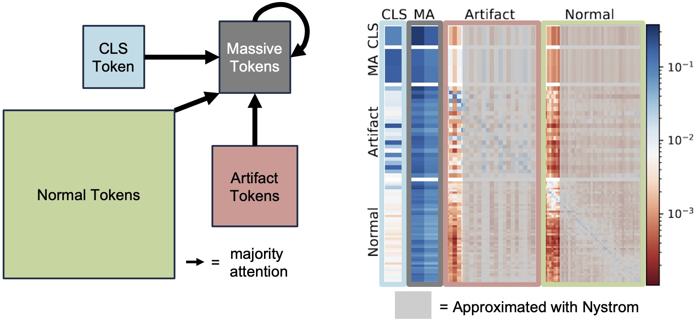
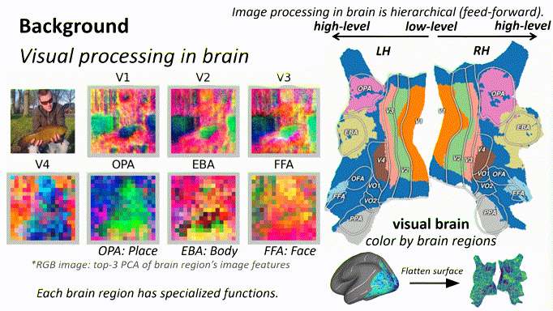

Improve Model
Improve generative model's creativity and reasoning capabilities, improve transformer attention layers' inference efficiency

Structured approximations for efficient vision transformers by exploiting artifact and sink tokens in attention layers.
Understand Model
Understand model representations through neuroscience and brain-model alignment analysis

We show that human brain responses can be used to decode and understand the internal representations of deep neural networks. Our approach reveals hierarchical alignment between brain and model representations. ✨ Highlight, 2.8% acceptance rate
Open-source Tools
Nyström Normalized Cuts PyTorch - Normalized Cut with Nyström approximation, run on million-scale graph in milliseconds. O(n) time complexity, O(1) space complexity.